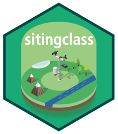

Download digital elevation models from Kartverket's WCS API
Source:R/download_dem_kartverket.R
download_dem_kartverket.RdBuild a WCS URL request with `httr2` to download Kartverket's DEM with `terra::rast()` from a bounding box and a DEM type (i.e. "dom" or "dtm"). The bounding box is centered to a parsed location and a parsed radius set the extent. The downloaded DEM is a SpatRaster object. If the DEM file already exists, it is loaded by default unless f_overwrite is set to TRUE
Usage
download_dem_kartverket(
stn = NULL,
name = "dom",
dx = stn$dx,
resx = stn$resx,
path = "data/dem",
f_overwrite = FALSE
)Arguments
- stn
A SpatVector with station attribute `stationid` from
"get_latlon_frost"- name
A name of the DEM to download, either "dtm" a terrain model
- dx
A distance in metre or radius defining the extent of the bounding box from the centre point
- resx
A horizontal resolution in metre
- path
A directory path defining where will be saved the data
- f_overwrite
A boolean whether the DEM file should be overwritten
Examples
# Define parameters
stn <- get_metadata_frost(stationid = 18700, dx = 100, resx = 1)
#> [1] " "
#> [1] "-------------------------------------------"
#> [1] "station MET.NO: 18700 -- OSLO - BLINDERN -- Fast_IP: 10.240.10.11:6785"
#> [2] "station MET.NO: 18700 -- OSLO - BLINDERN -- Fast_IP: 10.240.10.11:6785"
#> [3] "station MET.NO: 18700 -- OSLO - BLINDERN -- WMO: 0-20000-0-01492"
#> [4] "station MET.NO: 18700 -- OSLO - BLINDERN -- WIGOS: 0-20000-0-01492"
#> [1] "-------------------------------------------"
#> [1] " "
path <- "data/dem"
# Load data using httr2 and terra
dem <- download_dem_kartverket(stn,name="dtm",path=path)
#> [1] "Process: 18700 - 260966.8/6652718.0 - dtm - 100/1 - path: data/dem"
#> [1] "Load demo file: data/dem/18700_dtm_25833_d00100m_1.0m.tif"
dsm <- download_dem_kartverket(stn,name="dom",path=path)
#> [1] "Process: 18700 - 260966.8/6652718.0 - dom - 100/1 - path: data/dem"
#> [1] "Load demo file: data/dem/18700_dom_25833_d00100m_1.0m.tif"
demkm <- download_dem_kartverket(stn,name="dtm",dx=20e3,resx=20,path=path)
#> [1] "Process: 18700 - 260966.8/6652718.0 - dtm - 20000/20 - path: data/dem"
#> [1] "Load demo file: data/dem/18700_dtm_25833_d20000m_20.0m.tif"